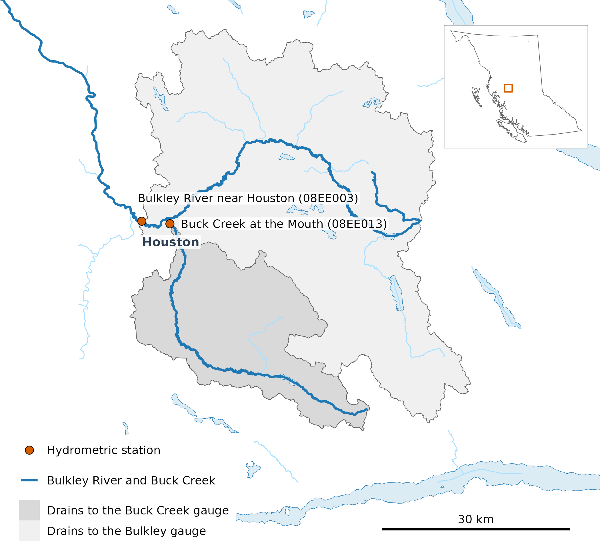
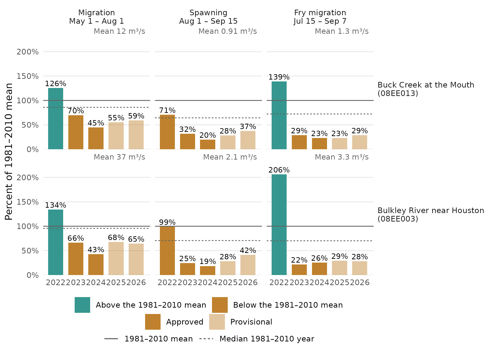
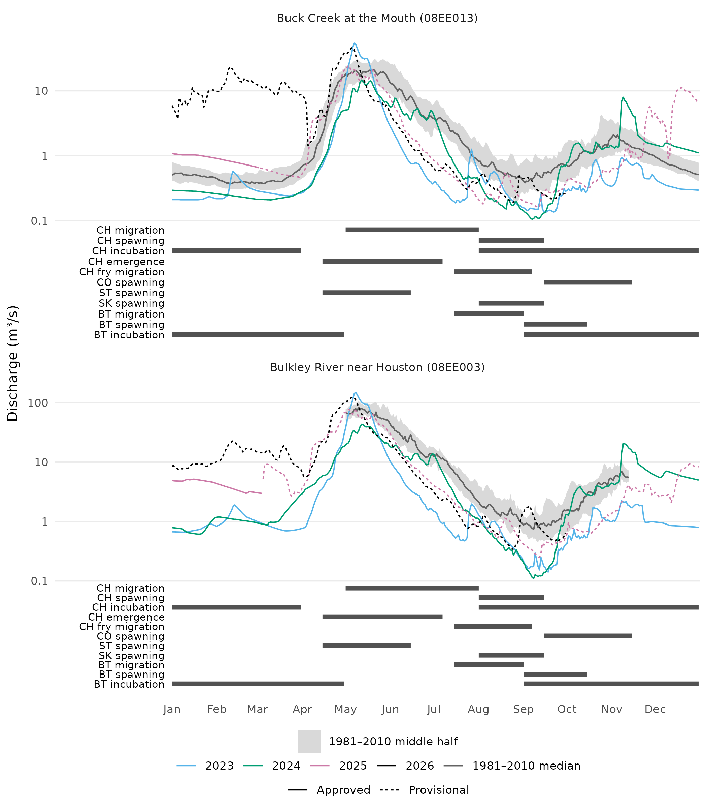
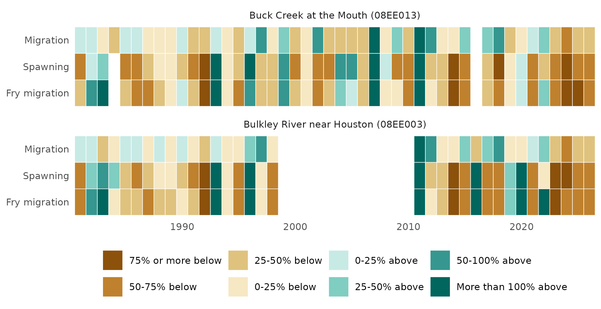
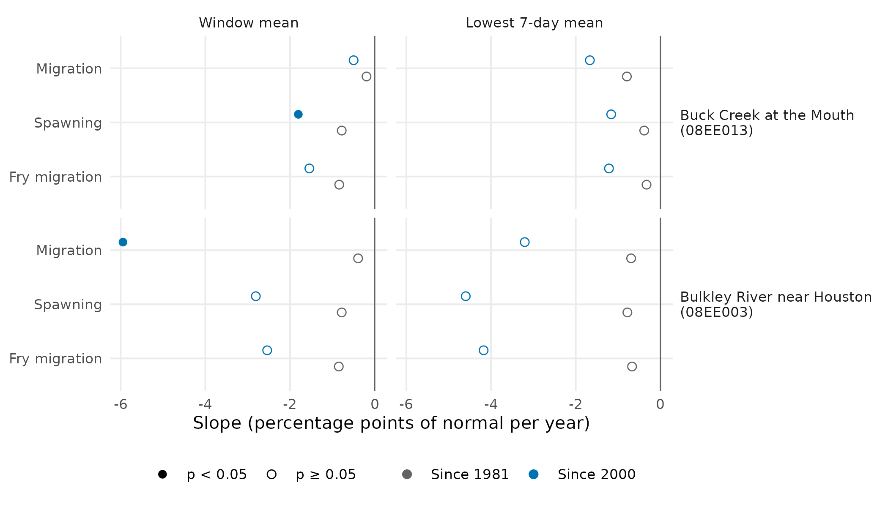

Chinook use the Bulkley River in summer. Adults migrate upstream from May 1 and spawn from Aug 1, and fry move downstream from Jul 15. This vignette asks how flow in those three windows over the last five years, 2022–2026, compares with 1981–2010 at two hydrometric stations near Houston. Chinook incubation (Aug 1 – Mar 31) and emergence (Apr 15 – Jul 7) reach into November–April, when the gauges can read under ice, so they are left out.
Where the stations are
Both stations are near Houston. Buck Creek joins the Bulkley in the town, and the Bulkley gauge sits downstream, so it measures Buck Creek’s flow as well. Buck Creek drains 24% of the area above the Bulkley gauge.

The two stations and the land each one drains. Buck Creek’s catchment (567 km²) lies inside the Bulkley gauge’s (2,315 km²), so the two records are not independent.
The recipe
These are the calls that produced the numbers. They need HYDAT, the water-temp-bc archive and the ECCC real-time feed, so the vignette runs on a cached copy of their output (see Cached inputs, below).
library(wet)
# HYDAT, then ECCC provisional, then real-time, per station
daily <- wet_station_daily(c("08EE013", "08EE003"))
windows <- data.frame(window = c("Migration", "Spawning", "Fry migration"),
start = c("05-01", "08-01", "07-15"), end = c("08-01", "09-15", "09-07"))
stats <- wet_window_stats(daily, windows, stats = c("mean", "min7"))
# baseline, departure and trend are cd's, one station per call
buck <- stats[stats$station_number == "08EE013", names(stats) != "station_number"]
base <- cd::cd_baseline(buck, 1981:2010)
departure <- cd::cd_anomaly(buck, base)
trend <- cd::cd_trend(departure, trend_start = c(1981, 2000))The last five years against 1981–2010
Each bar is one window in one year. Its height is the window’s mean flow as a percentage of that window’s 1981–2010 mean.
Every window at both stations was below normal in 2023–2026. That is not simply a typical year falling under a mean that wet years pull up. A median 1981–2010 year sits at 64%–96% of the mean, but 21 of the 24 bars from those years were drier than nine 1981–2010 years in ten, and 6 were drier than any. The lowest was spawning at Bulkley River near Houston in 2024, at 19% of normal. 2022 was the exception, with migration and fry migration above normal at both stations. For each window and year, the two stations’ bars fall on the same side of normal in 15 of 15 cases. That is partly by construction, because one catchment holds the other.

Mean flow in each Chinook window, 2022–2026, as a percentage of its 1981–2010 mean (solid line, given in m³/s in each panel). The dashed line is the median 1981–2010 year. At Bulkley River near Houston (08EE003), the 1981–2010 baseline rests on 1981–1998: no window in 1999–2010 has 80% of its days.
The daily record
The same five years, day by day. The grey band is the middle half of 1981–2010 flows on each day, and its line is the median, not the mean.

Daily flow, May to October, 2022–2026 (lines, broken where a day has no record), over the 1981–2010 median day and middle half (drawn only on days with at least 10 years). The Chinook windows run beneath. Log scale.
Every year since 1981
The same departures for every year since 1981, to put the last five in context. Bulkley River near Houston (08EE003) has no window with 80% of its days in 1999–2010.

Window mean flow above or below its 1981–2010 mean, in %. Blank cells have under 80% of their days, or none.
Trends
The slope of each window’s departure, from 1981 and from 2000, for the window mean and its lowest seven-day mean. Of 24 slopes, 2 are significant at p < 0.05, all of them negative. Chance alone would give about 1, but the tests are not independent: fry migration shares 38 of its days with spawning, and one station drains into the other. At Bulkley River near Houston (08EE003), “from 2000” starts in 2011.

Theil-Sen slope of the departure, in percentage points of normal per year, from 1981 and from 2000. Filled where the Mann-Kendall p is below 0.05.
What it does not show
- The latest years are provisional. Approved HYDAT flows end in March 2025, so 2 of the five years shown rest on provisional flows that may still be revised.
- Some bars have days missing. A window counts when 80% of its days have a recorded flow. 3 of the 30 bars rest on 80%–91% of their days, where the record has gaps: Bulkley River near Houston in 2025 (migration, spawning and fry migration).
- Some baselines have years missing. Buck Creek at the Mouth lacks 1984 in spawning and fry migration; Bulkley River near Houston lacks 1999–2010 in every window: no window in those years has 80% of its days.
- The windows come from the literature, not from observation. NGE’s life-history table cites Gottesfeld and Rabnett (2007) for all three, though its fry migration citation is carried over from a neighbouring watershed’s row.
Cached inputs. HYDAT release 2026-07-17, with
provisional and real-time flows retrieved 1 October 2026; life-history
table at commit c97c4d0. Regenerated by
data-raw/station_vignette_data.R. Map layers from the
Freshwater Atlas (fwapg) and BC Geographic Names, by
data-raw/station_vignette_map.R.